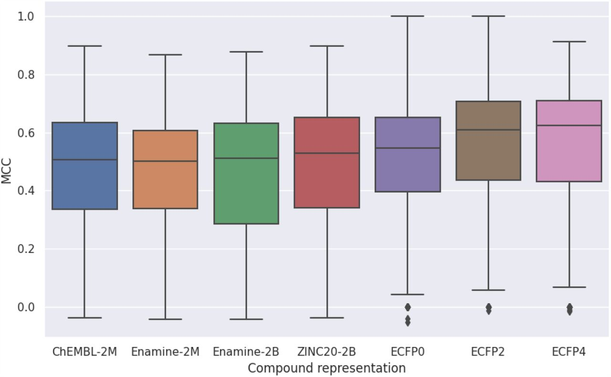
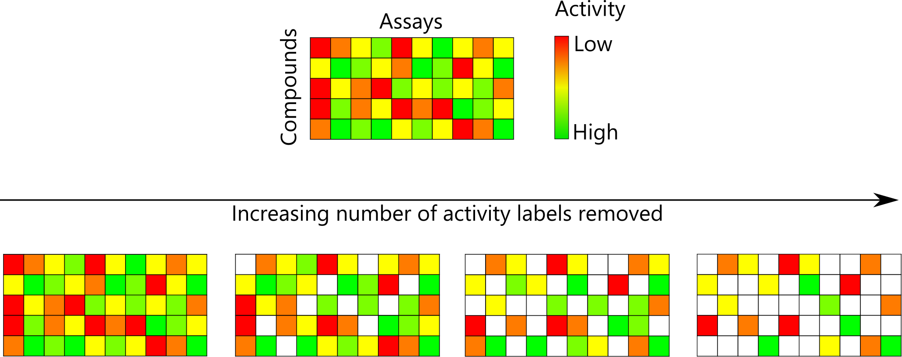
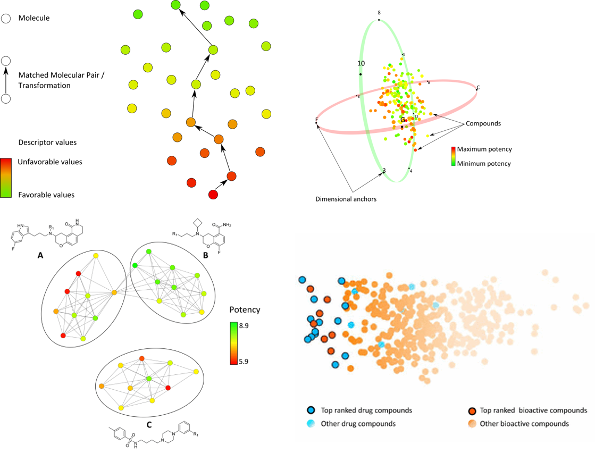
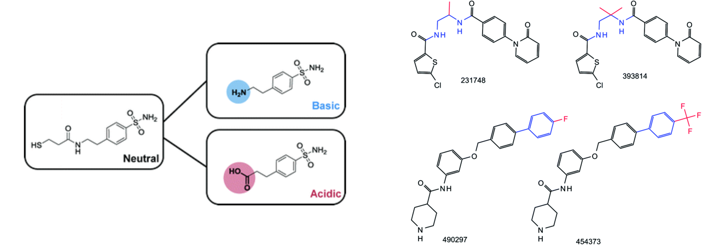
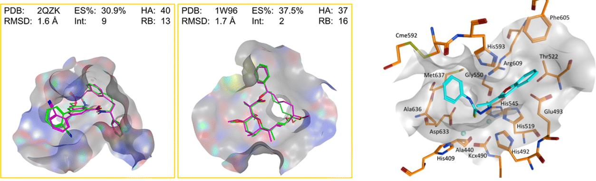

Research
current interests
My research interests centre on the use of machine learning and visualisation in pharmaceutical research to aid decision making. I am particularly interested in:
- Machine learning model interpretation — ML models learn associations between structural elements of molecules and biological properties that are expensive to measure. I develop techniques that make these models understandable, so structural insights can inform compound design.
- Visualisation of chemical space — developing novel visualisations that bridge the structural information of sets of molecules to their physico-chemical and biochemical properties, condensing large amounts of information into interpretable views.
learned representations
Generative models trained on large corpora of molecular structures generate internal representations of molecules that can be of use in property prediction. Our work showed that without finetuning, that internal representation of models pretrained on 2 billion structures were no better than traditional chemical fingerprints.

D3i4AD project
I worked as a Marie Curie fellow as part of the European project Diagnostics and Drug Discovery Initiative for Alzheimer's Disease (D3i4AD). I developed deep neural networks with a dual purpose: predicting whether a compound would be active in a phenotypic screen, and identifying which target in the studied pathway it acted against. These models were used to screen compound libraries and to aid in the target deconvolution of hit compounds.
machine learning
Machine learning generates mathematical models that can predict a range of properties given suitable training data. I first worked on using matched molecular pairs as input to predict changes in activity caused by small chemical modifications. I also analysed how missing data affects the performance of multitask machine learning, providing an approximation of how much performance can be gained by testing new compound–assay combinations.

visualisation of chemical space
Chemical space is the collection of all physically possible compounds. Public and private collections have become very large, making systematic structure–activity analysis complicated. Tailored visualisations ease this analysis by providing general or focused views of chemical space.
A large part of my thesis was dedicated to the design and development of visualisations for complex, high-dimensional chemical spaces. I expanded the chemical space network concept to generate coordinate-free representations of coordinate-based chemical space, and introduced a layout algorithm to provide global-view character to these networks. I also developed multi-objective chemical space views and collaborated with Pfizer scientists to assess the progression of lead optimisation series using SAR matrices and visualisations.

matched molecular pairs
Matched molecular pairs (MMPs) are compound pairs that share a large common substructure but differ at a specific site. They constitute an intuitive way to represent chemical similarity and have become increasingly important for molecular design. I performed several data mining analyses of MMPs on public databases (PubChem, ChEMBL), focusing on how structural modifications encoded in these pairs change physico-chemical properties like activity or ionizability. I also proposed an extension of the MMP concept using a retrosynthetic approach during pair generation.

molecular modelling
Docking of compounds onto protein binding pockets provides hypotheses about binding conformation that can inform further optimisation. I assisted medicinal chemistry groups by performing docking studies on compound series, and worked on conformational analysis of macrocycles — complex molecules possessing a large ring, many of which are interesting natural products. We compared traditional conformational sampling (LowModeMD) against short MD simulations to determine which better identified active conformations.

bioinformatics
During the final year of my undergraduate degree I was part of Prof. Julian Perera's workgroup. Using partial sequencing results for Rhodococcus ruber strain Chol-4, I performed the first partial assembly of the contigs and characterised the genomic regions containing the genes responsible for cholesterol degradation.